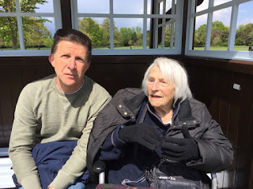
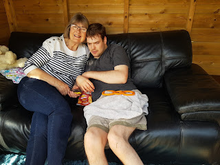

{kind=link}
Today is a publication day. Today, Golden Duck UK Ltd (that’s Francis and I with the typesetting assistance of our son Bertie) publishes The Holding Pen: 14 days enforced isolation for people living in care homes. It’s only a booklet: 40 A5 pages swiftly printed by Woodbridge Bettaprint. I sent it in advance to the Helen Whately, the Care Minister. I wasn't seeking a review. I want her to change the current Government policy on isolation in care homes.
This requires that anyone who has spent a night outside their care home must be isolated for the following fortnight. It doesn’t matter whether that night has been spent in their family home (so important to younger people who are living in care homes because of their significant disabilities) or in hospital (under observation perhaps, following a fall) or whether that night was their last in their own home before illness or age brings an end to independent living. All of these places apparently pose such a significant risk that 14 days in a room alone is the only mitigation. Double vaccinations, negative tests, the covid-free status of the previous refuge; nothing is accepted in mitigation. (Not by the Guidance at least. Certain humane and decent care homes ignore this requirement, but they know they may be in trouble with the regulator (CQC), the local authority and their insurance companies.
The Government calls this ‘self-isolation’ but it is not. It is enforced segregation, very often on people who have little idea what is happening or why. Meet Robert for instance. Robert lives with complex disabilities. He cannot speak or walk, so he crawls. What would ‘self-isolation' mean for Robert? His mother Joan explains
For Robert his room contains a padded bed (cell) area where he is free to move but outside that he would be placed in his wheelchair where he is literally is in a strait jacket possibly for hours at a time tied in 3 places, chest and waist straps when they consider necessary he even has foot straps depriving him of his liberty to move freely. Remember this is for 14 long days unlike people who are not disabled only need to quarantine for 10 days.
Does he tie his own straps one wonders?
| Robert |
{kind=link}
Today, I am moving my 98 year old mother from her respite care home
to her permanent home near where I live. I could hardly sleep last night
for the thought of her having to isolate in her room for two weeks. She will
feel like a prisoner and I won't be able to help her settle in.
Whilst
looking for the right home for her, I have found care home managers to be
anxious and inflexible. They cite 'official guidance' and won't enter into a
discussion of individual risk. When my mother is moving directly from one care
setting to another - she will be in my car with just me for the whole journey -
why is it necessary for her to be isolated for two weeks?
Her crime, one assumes, is being old and ill.
Melanie’s mother, Jean, was convicted of a similar offence. She is
91 and had been living happily and independently in extra care accommodation
until the loneliness of 2020 began to take its toll.
She went downhill during the past
year with no visitors initially and then my brother fortnightly as her bubble.
I saw her two or three times and noticed before Christmas that she was becoming
increasingly confused.
A six week stay in hospital in February/ March
(where I was able to see her regularly and re-establish contact) resulted in a
diagnosis of Lewy Body dementia and a recommendation that she entered a residential
care home. She was taken in one afternoon with little notice - a phone call to
my brother to say she was going. No choice, no visit, no say in the matter with
the family. She just went. My brother was allowed half an hour to get her into
her room with very little in the way of possessions. Then he had to leave her.
He cried all the way home.
She had to isolate in a room she had never seen,
in a place she didn’t know, with people she had never seen before and no
contact with us for 14 days. This is a person newly diagnosed with dementia. We
went through hell trying to imagine how she felt.
 |
| Alan and Jean |
{kind=link}
The outcome for Rosemary’s ‘self-isolating’ friend was worse. You'll have to read our book...
I sent The Holding Pen to Helen Whately, the Minister for Social Care. Friends told me she was a decent person who perhaps hadn’t understood the impact of this 14 day so-called 'self-isolation' on the people least able to bear it. I asked Joan what she’d like to say: ‘I’d like to tell her how frightening this is.’ Following earlier legal and public pressure, Robert is allowed to return to his family home for a few hours on a Saturday. But he’s not allowed inside! ‘This rule is repeated in all communications from the care home and we are told that if he enters the house he would have to quarantine for 14 days.’ It’s a terrifying prospect.
Robert also needs hospital dental treatment under anaesthetic. But that too carries the 14 day penalty. Helen is experiencing a similar dilemma: I have to decide whether to take Mum for her sight-saving hospital treatment and risk her losing her mind completely with another enforced isolation or to save her sanity and let her lose her sight..
Can this be for real, you ask? All I can say is that the majority of the testimonies
in The Holding Pen were collected over the recent Bank Holiday weekend (May 29th-31st) and I hear more every day. If you then wonder whether these honest, articulate,
heartfelt explanations have made any difference to attitudes in the Department
of Health and Social Care, the answer appears to be no.
So today (June 9th) is also the day John’s Campaign instructs its lawyers to issue proceedings against the Secretary of State. As a purely voluntary movement we can only do this if people donate to the Crowd Justice fund which pays the fees. If you buy The Holding Pen (ISBN 978-1-899262-45-8 £4) from the Golden Duck bookshop https://golden-duck.co.uk/books your money will go to the fund. If you buy it via Amazon or any other bookshop (available in a few days) a donation will go to the fund. If you prefer to read electronically just send me an email julia@johnscampaign.org.uk and tell me you’ve made a donation (just a little one); I’ll send you a pdf.
Here’s the fund again https://www.crowdjustice.com/case/care-homes/
Lawyers have a language of their
own. Here’s a paragraph from the Grounds
of our case
“As it is put in Street on Torts, 15th ed (2018), by Christian Witting, p 259, “False by the defendant.” The essence of imprisonment is being made to stay in a particular place by another person. The methods which might be used to keep a person there are many and various. They could be physical barriers, such as locks and bars. They could be physical people, such as guards who would physically prevent the person leaving if he tried to do so. They could also be threats, whether of force or of legal process.”
So much for the 'self-isolation claim - Street on Torts must be worth a few guineas of anyone’s money!
 |
| Joan and Robert The family have built a summer house for Robert's visits as he's not 'allowed' in their home |
{kind=link}